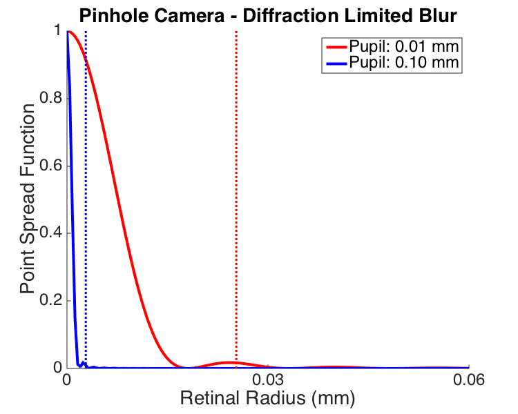

Contents
function cbPinholeOpticsBlur
% cbPinholeOpticsBlur % % Examine size of geometric blur due to a finite pupil and of blur due to diffraction, for a pinhole eye. % % Requires: Psychophysics Toolbox % % (c) David Brainard and Andrew Stockman, 2014
Clear
clear; close all;
Set parameters
eyeLengthMm = 17; wavelengthNm = 500; distanceToSourceMm = 2000; minPupilDiameterMm = 0.01; maxPupilDiamterMm = 0.1; nPupilDiameters = 5; pupilDiametersMm = linspace(minPupilDiameterMm,maxPupilDiamterMm,nPupilDiameters); VERBOSE = false;
Compute diffraction blur for each pupil size
The Psychtoolbox routine AiryPattern does the work.
% Set up radii to compute on. Start by specifying the range % in retinal mm and then converting to degrees. retinalRadiiMm = 0.2; retinalRadiiDeg = RetinalMMToDegrees(retinalRadiiMm,eyeLengthMm); % Set up grid matrices, so that we can convert radius to two-dimensional % image. Although it is probably inefficient to compute on all the radii % of a square image matrix (as opposed to computing for linear radii and % then propogating the andser onto an image), computers are fast enough % that we don't care. nPixels = 501; centerPixel = round(nPixels+1)/2; radiusMatrixDegs = retinalRadiiDeg*MakeRadiusMat(nPixels,nPixels,centerPixel,centerPixel)/nPixels; radiusMatrixMm = retinalRadiiMm*MakeRadiusMat(nPixels,nPixels,centerPixel,centerPixel)/nPixels; radiusLineMm = radiusMatrixMm(centerPixel,centerPixel:end); % Do the calculation for each pupil size and % normalize volume of PSF to unity. Also % extract 1d slice. fprintf('Computing diffraction limited PSFs\n'); for p = 1:length(pupilDiametersMm) fprintf('\t%d of %d\n',p,length(pupilDiametersMm)); pupilDiameterMm = pupilDiametersMm(p); diffractionPsfImage{p} = AiryPattern(radiusMatrixDegs,pupilDiameterMm,wavelengthNm); diffractionPsfImage{p} = diffractionPsfImage{p}/sum(diffractionPsfImage{p}(:)); diffractionPsfSlice{p} = diffractionPsfImage{p}(centerPixel,centerPixel:end); end
Computing diffraction limited PSFs 1 of 5 2 of 5 3 of 5 4 of 5 5 of 5
For comparison with geometric blur, it is convenient
to characterize the diffraction limited PSF by an equivalent circular blur function. We do this by finding the radius that contains a criterion percent of the pupil volume, and calling that the equivlent cirular psf. This is a rough and ready approximation, but we find it conceptually convenient.
criterionPsfFraction = 0.9; radiiMm = unique(radiusMatrixMm(:)); fprintf('Computing equivalent diffraction limited blur circle PSFs\n'); for p = 1:length(pupilDiametersMm) fprintf('\t%d of %d\n',p,length(pupilDiametersMm)); for i = 2:length(radiiMm) index = find(radiusMatrixMm <= radiiMm(i)); volume(i) = sum(diffractionPsfImage{p}(index)); if (volume(i) > criterionPsfFraction) lambda = (criterionPsfFraction-volume(i-1))/(volume(i)-volume(i-1)); eqDiffractionBlurCircleDiameterMm(p) = (1-lambda)*radiiMm(i-1) + lambda*radiiMm(i); break; end end % Compute circular psfs at the equivalent diameters % % Build the image eqDiffractionPsfImageMm{p} = ones(size(radiusMatrixMm)); index = find(radiusMatrixMm > eqDiffractionBlurCircleDiameterMm(p)); eqDiffractionPsfImageMm{p}(index) = 0; % Normalize volume and extract slice eqDiffractionPsfImageMm{p} = eqDiffractionPsfImageMm{p}/sum(eqDiffractionPsfImageMm{p}(:)); eqDiffractionPsfSlice{p} = eqDiffractionPsfImageMm{p}(centerPixel,centerPixel:end); end
Computing equivalent diffraction limited blur circle PSFs 1 of 5 2 of 5 3 of 5 4 of 5 5 of 5
Plot a slice of the diffraction limited psf
The plot shows a slice through the center of the psf for two pupil sizes (the smallest and largest that we compute for.).
The plot works better to compare shapes if we normalize PSFs to max of 1 rather than to unit volume, but be aware that the height of the volume normalized PSF will be different as a function of pupil size.
The plot also shows radius of equivalent blur circle as dashed vertical lines.
[diffractionSliceFig,diffractionSliceFigParams] = cbFigInit;
diffractionSliceFigParams.xLimLow = 0;
diffractionSliceFigParams.xLimHigh = 0.06;
diffractionSliceFigParams.xTicks = [0 0.03 0.06];
diffractionSliceFigParams.xTickLabels = {};
diffractionSliceFigParams.yLimLow = 0;
diffractionSliceFigParams.yLimHigh = 1;
diffractionSliceFigParams.yTicks = [0.0 0.2 0.4 0.6 0.8 1];
diffractionSliceFigParams.yTickLabels = {};
plot(radiusLineMm,diffractionPsfSlice{1}/max(diffractionPsfSlice{1}),'r','LineWidth',diffractionSliceFigParams.lineWidth);
plot(radiusLineMm,diffractionPsfSlice{end}/max(diffractionPsfSlice{end}),'b','LineWidth',diffractionSliceFigParams.lineWidth);
plot([eqDiffractionBlurCircleDiameterMm(1) eqDiffractionBlurCircleDiameterMm(1)],[0 1],'r:','LineWidth',diffractionSliceFigParams.lineWidth-1);
plot([eqDiffractionBlurCircleDiameterMm(end) eqDiffractionBlurCircleDiameterMm(end)],[0 1],'b:','LineWidth',diffractionSliceFigParams.lineWidth-1);
xlabel('Retinal Radius (mm)','FontSize',diffractionSliceFigParams.labelFontSize);
ylabel('Point Spread Function','FontSize',diffractionSliceFigParams.labelFontSize);
title('Pinhole Camera - Diffraction Limited Blur','FontSize',diffractionSliceFigParams.titleFontSize);
cbFigAxisSet(diffractionSliceFig,diffractionSliceFigParams);
legend({sprintf('Pupil: %0.2f mm',pupilDiametersMm(1)) sprintf('Pupil: %0.2f mm',pupilDiametersMm(end))},'Location','NorthEast','FontSize',diffractionSliceFigParams.legendFontSize);
FigureSave('PinholeOpticsBlurDiffractionSlice',diffractionSliceFig,diffractionSliceFigParams.figType);
 Compute geometric blur for a pinhole optics.
This depends on the distance to the object, and in the limit of a infitely distant point source is just the pupil diameter directly.
We think that the distance dependence is also true of diffraction, in the sense that using the Airy pattern as the PSF results from some approximations that treat the arriving wavefront as planar at the pupil.
In any case, we'll use a distance that is big with respect to the scale of the model eye.
fprintf('Computing pinhole geometric blur circle PSFs\n'); for p = 1:length(pupilDiametersMm) fprintf('\t%d of %d\n',p,length(pupilDiametersMm)); % Geometric calculation geometricBlurCircleDiameterMm(p) = ((distanceToSourceMm+eyeLengthMm)/distanceToSourceMm)*pupilDiametersMm(p); % For a really fair comparison with diffraction, should find the % equivalent circle diameter, that contains the criterion fraction % of the volume. eqGeometricBlurCircleDiameterMm(p) = sqrt(criterionPsfFraction)*geometricBlurCircleDiameterMm(p); eqGeometricPsfImageMm{p} = ones(size(radiusMatrixMm)); index = find(radiusMatrixMm > eqGeometricPsfImageMm{p}); eqGeometricPsfImageMm{p}(index) = 0; % Normalize volume and extract slice eqGeometricPsfImageMm{p} = eqGeometricPsfImageMm{p}/sum(eqGeometricPsfImageMm{p}(:)); eqGeometricPsfSlice{p} = eqGeometricPsfImageMm{p}(centerPixel,centerPixel:end); end
Computing pinhole geometric blur circle PSFs 1 of 5 2 of 5 3 of 5 4 of 5 5 of 5
Close up
This prevents a mess when we publish many scripts at once.
close all;